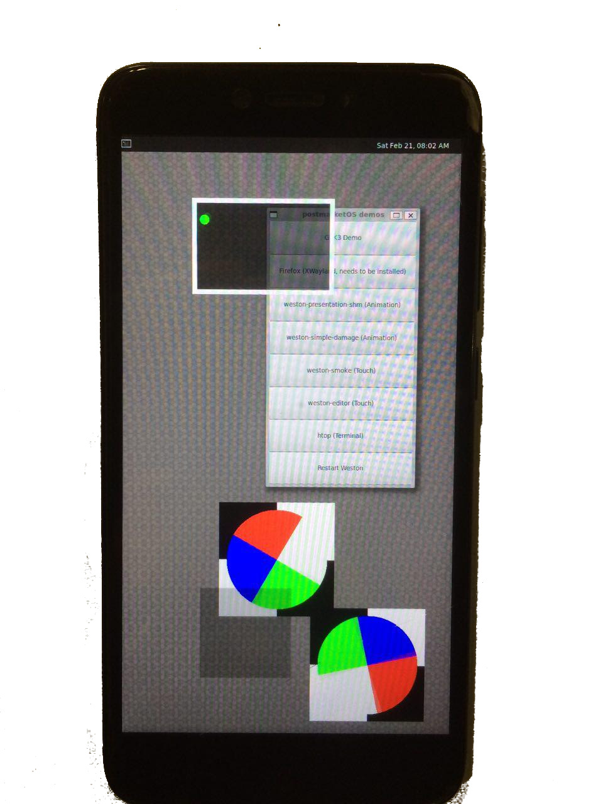

Xiaomi Redmi 4X (xiaomi-santoni)
|
 xiaomi-santoni running pmOS demos | |
| Manufacturer | Xiaomi |
|---|---|
| Name | Redmi 4x |
| Codename | xiaomi-santoni |
| Released | 2017 |
| Category | testing |
| Original software | Android |
| Original version | 6.0 |
| Extended version | 7.1 |
| postmarketOS kernel | 3.18.140 |
| Hardware | |
| Chipset | Qualcomm Snapdragon 435 (MSM8940) |
| CPU | Octa-core 1.4 GHz Cortex-A53 |
| GPU | Adreno 505 |
| Display | 720x1280 |
| Storage | 16 GB / 32 GB / 64GB |
| Memory | 2 GB / 3 GB / 4 GB |
| Architecture | aarch64 |
| Type | handset |
| Unixbench Whet/Dhry score | 1526.7 |
{kind=link}
| USB Networking |
Works
|
|---|---|
| Flashing |
Works
|
| Touchscreen |
Works
|
| Display |
Works
|
| WiFi |
Works
|
| FDE |
Partial
|
| Mainline | |
| Battery |
Works
|
| 3D Acceleration | |
| Audio |
Works
|
| Bluetooth |
Partial
|
| Camera |
Broken
|
| GPS | |
| Mobile data | |
| SMS | |
| Calls | |
| USB OTG |
Works
|
| NFC | |
| Accelerometer | |
|---|---|
| Magnetometer | |
| Ambient Light | |
| Proximity | |
| Hall Effect | |
| Barometer | |
| Power Sensor | |
| Camera Flash | |
|---|---|
| Keyboard | |
| Touchpad | |
| USB-A | |
| HDMI/DP | |
| Ir TX | |
| Ir RX | |
| Stylus | |
| Haptics | |
| Ethernet | |
| FOSS bootloader | |
Contributors
- pinoaffe
- asriel-danctnix
- Danct12
Maintainer(s)
- Danct12
Users owning this device
What works
- Install to SD Card
- Boots
- Flashing
- Touch
- Wayland
- XWayland
- USB Ethernet/Internet
- WiFi
- Vibrator
- Audio
- Xorg
- USB OTG
- charging-sdl
What does not work
- Camera
- GPS
- Mobile Data
- SMS
- Calls
- Accelerometers
- Bluetooth (partially)
- 3D Acceleration (possible on mainline)
- Display Power Management on Wayland
- Full Disk Encryption (does unlock, but failed to look up the partition after booting)
Bugs?
- alsamixer doesn't work, will result in a error telling mixer controls doesn't exist, workaround to control the volume is to use PulseAudio.
Mainline kernel?
There's ongoing effort to bring up mainline kernel on MSM8937 platform, with initial focus on santoni: [1].
MSM8937/40 is pretty close to MSM8916, so a lot of drivers can be re-used with proper device tree and minimal address remapping in some places.
| Parts | Components | In Torvalds tree? |
|---|---|---|
| Chipset | MSM8940 | No |
| GPU | Adreno 505 | Yes (a5xx_gpu.c) |
| Touch Screen | FT5X06 | Yes (edt-ft5x06.c) |
| Fingerprint Sensor | FPC1020/Goodix | No |
| Accelerometer + Gyroscope | ICM20607/BMI120 | No/Yes (bmi160_i2c.c) |
| ALSPS | STK3X1X | Yes (stk3310.c) |
| Magnetometer | YAS537 | No |
| Sound | AW87319 | No |
| Notifications LED | AW2013 | Yes (leds-aw2013.c) |
| Front Camera | OV5675 | Yes (ov5675.c) |
| Back Camera | S5K3L8 | No |
More information on this port
- The upstream msm-3.18 kernel is a fork of https://github.com/bitrvmpd/msm-3.18
- Most of this work was done for my project (Arch Linux on Redmi 4X), and the progress are backported to postmarketOS in order to help development.
Bootloader Unlocking
Like other Xiaomi devices, the user will have to acquire the bootloader unlock key: https://en.miui.com/unlock
The device will not unlock if the device isn't 7 days old (from the time when your device connects to internet and powered on)
Key combinations for entering Recovery/Fastboot
Recovery
- Turn the device off (or restart also works)
- Hold both volume buttons (+ and -) and power button
- Keep holding until you got to recovery.
Fastboot
- Same as recovery, but this time hold the volume down key instead of both keys.
Installation
Installation over fastboot works, Android recovery zip installation is untested.
Bluetooth
Bluetooth on this phone is using the WCNSS chip, which provides two SMD channels to the BT core, one for command and one for event packets. Support for Bluetooth HCI SMD can be added using this patch.
With that patch applied, the Bluetooth interface can be bring up by set /sys/module/hci_smd/parameters/hcismd_set to 1. Then install bluez, start the service and use bluetoothctl to control it.
As right now, it seems to connect, but disconnect very quickly, it doesn't ask for pair code when connecting, so this needs to be investigated.
Serial Connection (UART)
The Serial Connection of the santoni has been tested only on reception mode, with 3.3v TTL to USB FT232RL. This example is an output when starting to fastboot.
Warning: the test point is very small, try to solder only if you're an expert on soldering or you may break the motherboard wirings.
Wiring: (Santoni TX --> FT232RL RX) and (Santoni GND --> FT232RL GND)
UART connected to GPIO 4,5
UART connected to GPIO 4,5
UART connected to TP29 (TX) and TP30 (RX)
Location of TP29 on front side of motherboard
Location of TP30 on front side of motherboard
Location of TP29 and GND
Example of connection, in this case RX is not used.
All the wiring done.
{kind=link}
{kind=link}
{kind=link}
{kind=link}
{kind=link}
{kind=link}
{kind=link}
{kind=link}
Photos

Weston with msm-3.18 upstream kernel

charging-sdl on Xiaomi Redmi 4X
YouTube on Redmi 4X
Redmi 4X booting mainline kernel
{kind=link}
{kind=link}